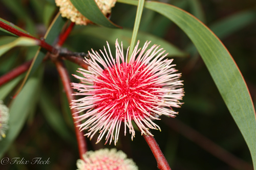

El hábito de esta planta es un arbusto o árbol recto, alcanzando una altura entre 2,5 y 6 metros. No posee un lignotúber. Su hábitat son las planicies arenosas, a veces crece en suelos arcillosos-arenosos, la mayor parte de los especímenes se encuentran en la parte más austral de su distribución.
Las flores son inicialmente pálidas o cremosas, quizás escondidas por las hojas en las primeras etapas, y están contenidas en brácteas en forma de escamas antes de abrirse. Estas son de color rosa profundo a rojo en el centro globular, un capítulo se encuentra arracimado en las axilas de la hoja, estilos pálidos emergen de aquellos. Este se parece a un alfiletero. Se produce néctar y una fragancia suave de las inflorescencias. El período de floración ocurre entre abril y agosto. Las hojas son simples y ligeramente verde azulosas, éstas son planas, glabras, tienen los márgenes enteros, y son de contorno obovado o lanceolado, llegando a una punta afilada en el extremo.